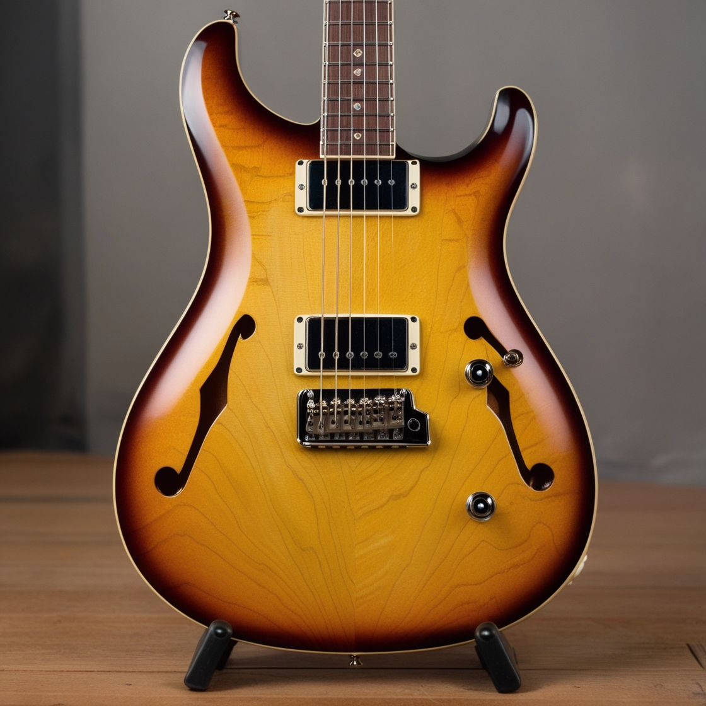
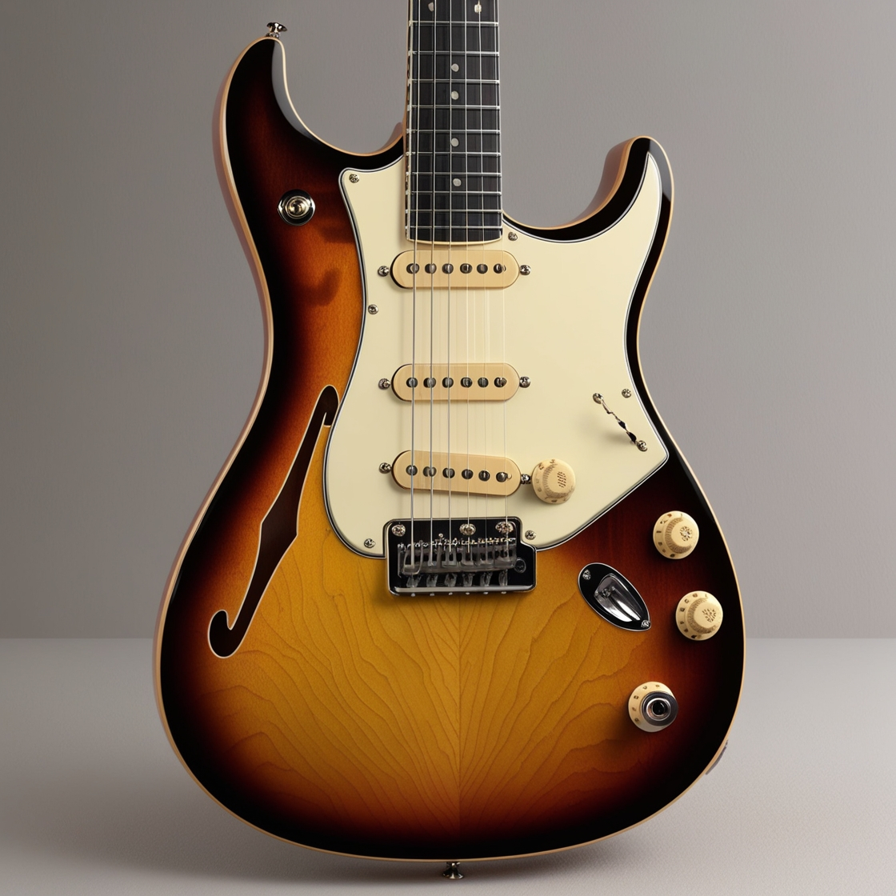
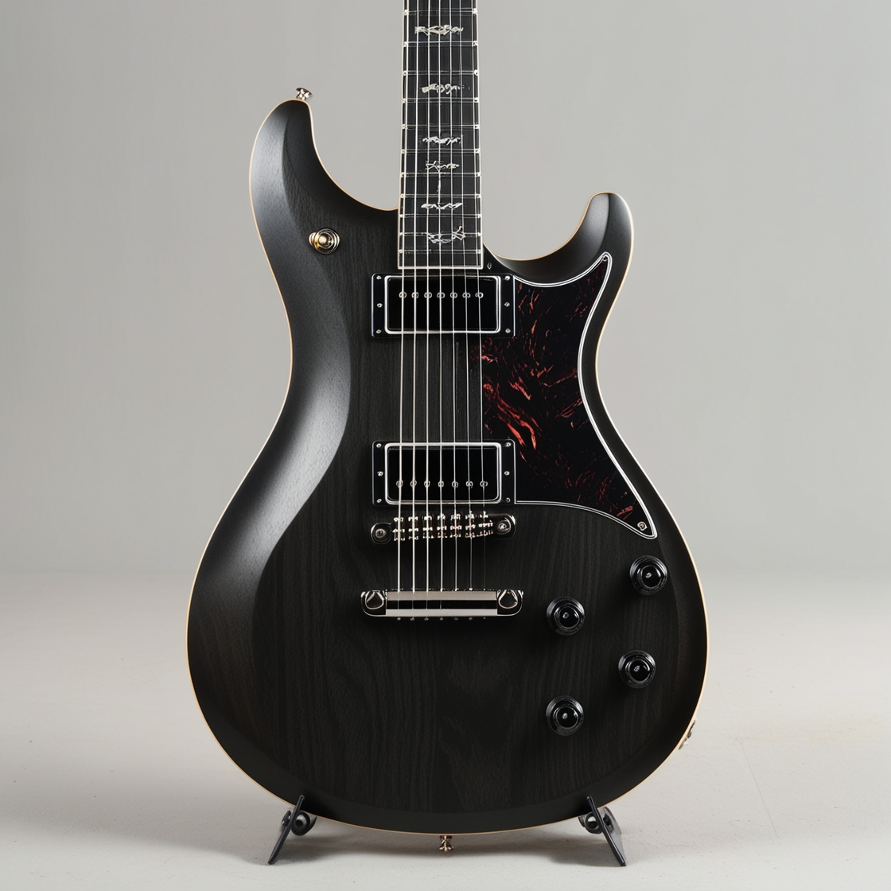
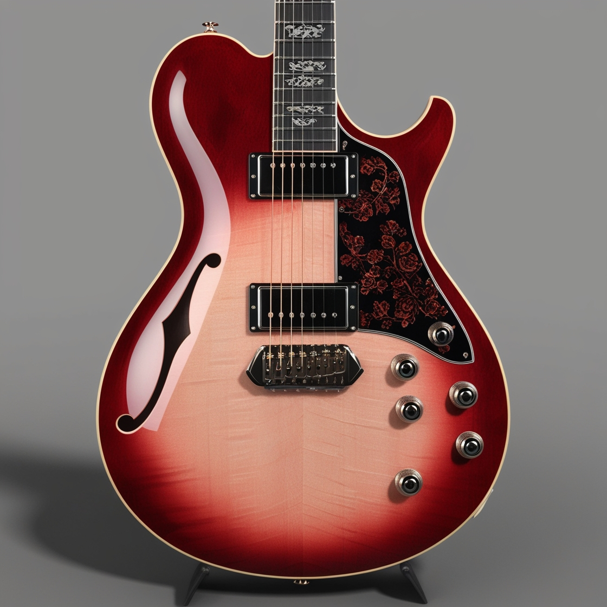
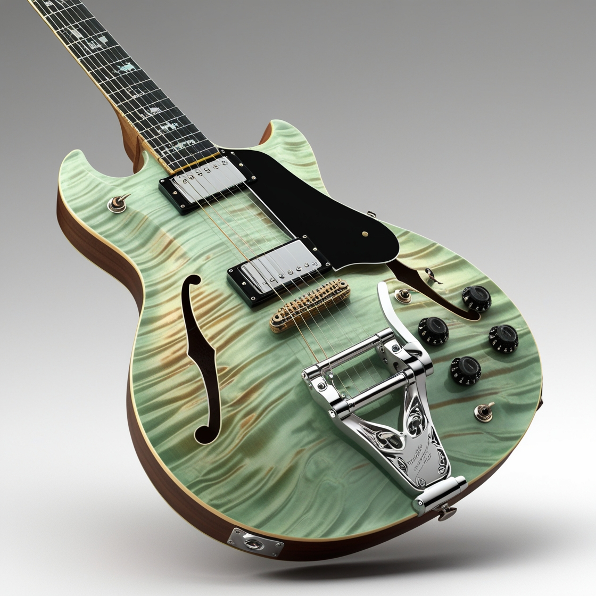
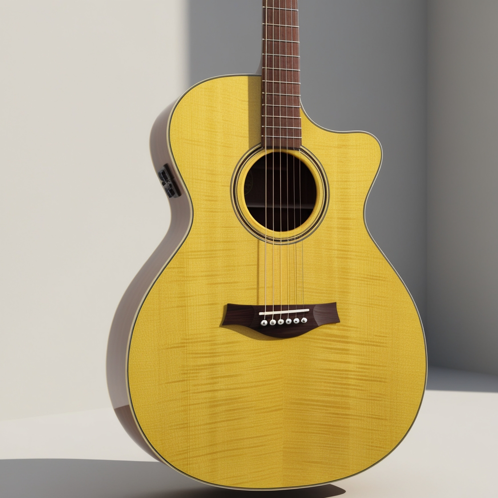

Our models
Sunburst Dream
The Sunburst Dream guitar offers you the perfect version of a hollowbody double humbucker strat sound and feel. Designed with Lo-Fi and jazz in mind, but perfect for what ever you throw at it.
Blues Screamer
The Blues Screamer offers you a hollowbody single coil strat style guitar with a major twist, it has a tube screamer pedal built in. Thats right! The top switch where you might noramlly find is a toggle to turn on the tube screamer that is in the guitar, with the 4th knobe being two parts. The clear controls the tone and the beige controls the volume.
Black Hole
The Black Hole guitar is the perfect blend of tone to play anything you can imagine. With its pull push pods allowing you to get the single coil sound like Mayor, or if you want something heavy you can use the bridge humbucker and you will not be dissaponited.
Rose Wood
The Rose Wood guitar offers you the feel of a guitar that has been played for years by the legends of blues themselves. The guitar has six knobs instead of the normal amount of 3. You have contol over every single pick up on the guitar. You can change the volume of each single coil in the humbuckers and the last two knobs are to controle the tone of each humbucker. Giving you the ultimate freedom of sound.
Green Chromis
The Green Chromis guitar is the perfect guitar to play heavy rock and blues. With insparation from the Foo Fighters and B.B.King. The guitar offers you the classic sound that everyone wants from a hollowbody, and the heavy crunch of the bridge pickup with the super clean neck pickup to give it that much nessasary contrast.
Yellow Warbler
The Yellow Warbler is the perfect acoustic guitar with its bright, full and warm sound that is perfect for playing around campfires to being played on tour infront of thousands of people.